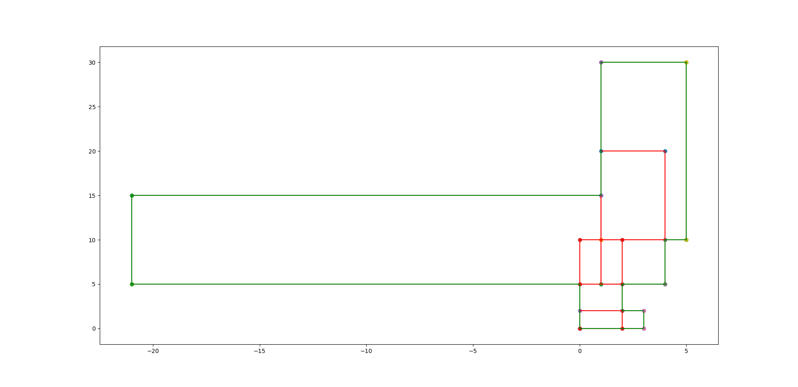

Input 16
5
1 5
4 20
1 10
5 30
-21 5
1 15
0 0
2 10
0 0
3 2
Output 16
Measure = 327
Number of Contour Lines = 14
Contour Line Segments:-
0 0 3 0
2 2 3 2
2 5 4 5
-21 5 0 5
4 10 5 10
-21 15 1 15
1 30 5 30
-21 5 -21 15
0 0 0 5
1 15 1 30
2 2 2 5
3 0 3 2
4 5 4 10
5 10 5 30
Contour Length = 114
